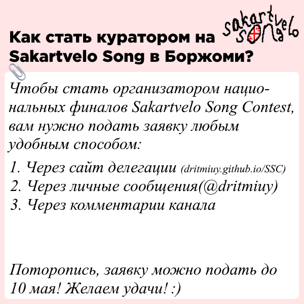
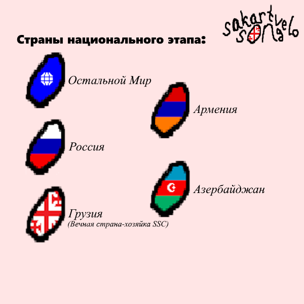

Материал создаётся и загружается!
Sakartvelo Song прошёл 1 мая, в столице Грузии Тбилиси. Победил GAZAN, второе место заняла Ёлка, третье Nikoloz Bulashvili.

Как подать заявку на проведение национального финала?
Её можно подать любым удобным способом(их два). Первый: напишите нам в телеграм. Второй: заполните специальную форму: ссылка на форму

Что такое национальные финалы и когда они проходят?
На SSC#2 будет 5 национальных финалов от: Грузии, России, Армении, Азербайджана и Остального Мира. Их кураторы и даты проведения станут известны 15 мая в день жеребьёвки. Национальный финал - это этап конкурса, в котором участвуют от 6 до 8 конкурсантов из России/Грузии и страны финала. Голосование в них преимущественно зрительское(минимум 50%), зависит от куратора. Все национальные финалы пройдут в телеграм-канале делегации.
Кто ещё пройдёт в финал, и когда он будет?
Финал SSC состоится в промежутке между 3 и 12 июля 2026 года. Дата проведения станет известна 15 мая. В финал пройдут победители 5 национальных этапов + серебро грузинского финала. Также пройдёт победитель второго шанса, который пройдёт 27 июня. И самый главный гость, газан(проходит на правах победителя первого SSC), чья песня в финале станет известна за 20 дней до шоу. О голосовании, проведении и прочем пока неизвестно.
United By Georgia!